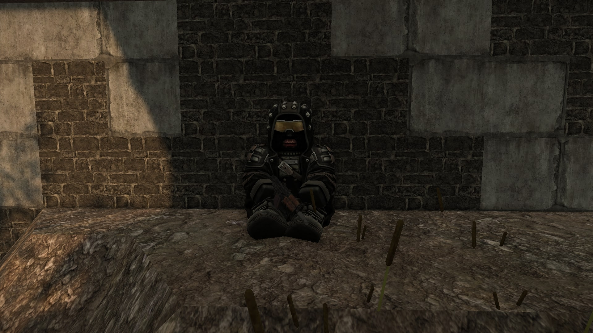

Квест берётся у блаженного по прозвищу Кислый на локации Агрокомплекс «Колос». Квест появится после взятия сюжетного квеста от Каа на поиск тайников.
Квест нелинейный, при неверном ответе его можно сразу провалить или лишиться дополнительной денежной награды. Важно выбирать правильные варианты диалога, чтобы помочь отчаявшемуся блаженному и получить координаты его тайника.
Прохождение
Квест нелинейный, с возможностью провала.
Встреча с Кислым
Выполнив сюжетный квест, приходим под мост на Агрокомплексе и говорим с Кислым. Говорим до диалога с вариантами ответов и отвечаем следующим образом:
2 Погоди-ка умирать, парень. Я знаю одного мудрого человека, его зовут Шаман. Он лидер блаженных и может тебе помочь.
2 Хорош рыдать, соберись с силами. Жизнь стоит того, чтобы за неё бороться. Шаман точно сумеет тебе помочь — поверь мне, ведь я тоже блаженный.

Кислый — измученный кошмарами блаженный
Поиск тайника
После диалога отправляемся на метку с тайником. Он расположен на крыше здания.
Тайник Кислого на крыше
В тайнике вы найдёте первую часть награды: Артефакт "Скорлупа", Сумку с военными аптечками, 2 Отечественных ИРП и 2 500 рублей.
Получение оставшейся награды
Чтобы получить оставшиеся 10 000 рублей, выполните сюжетный квест Каа и придите к Солянникову.
Когда вас позовёт в Бар Шаман, рядом с ним вы увидите Кислого, который за помощь докинет вам 10 000 рублей.